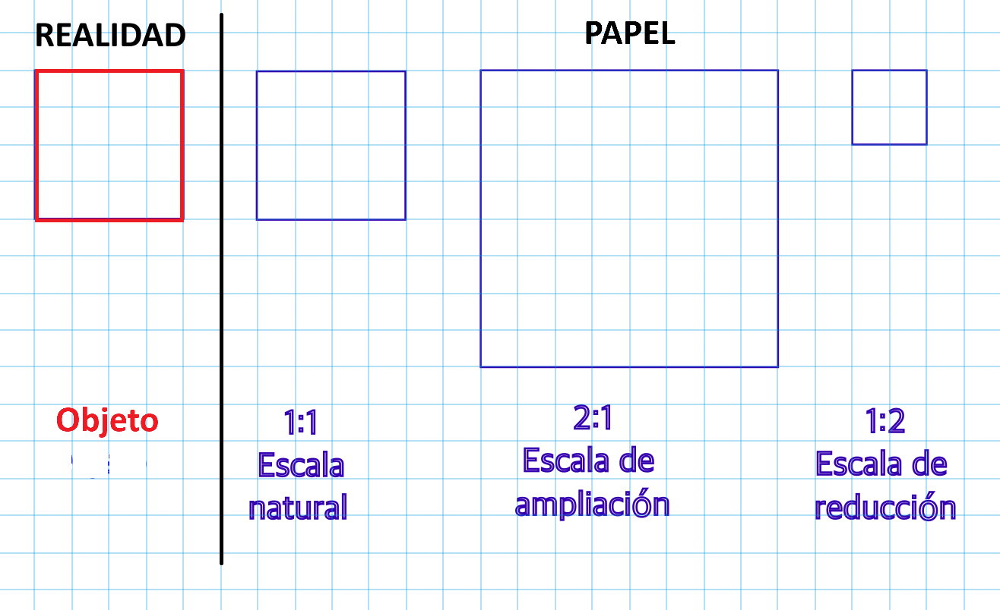
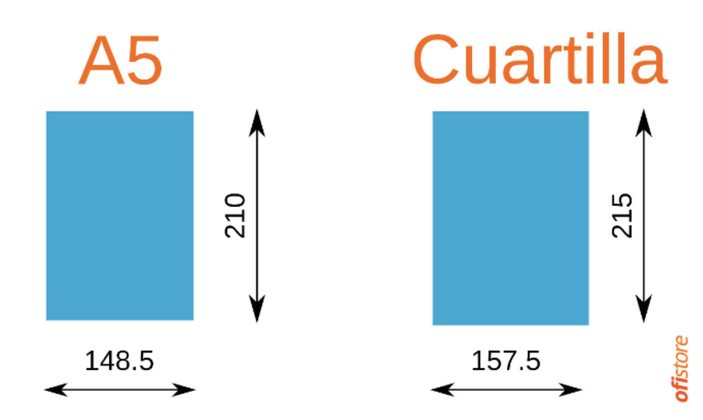
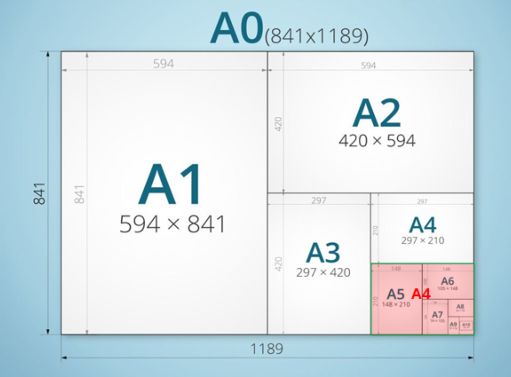
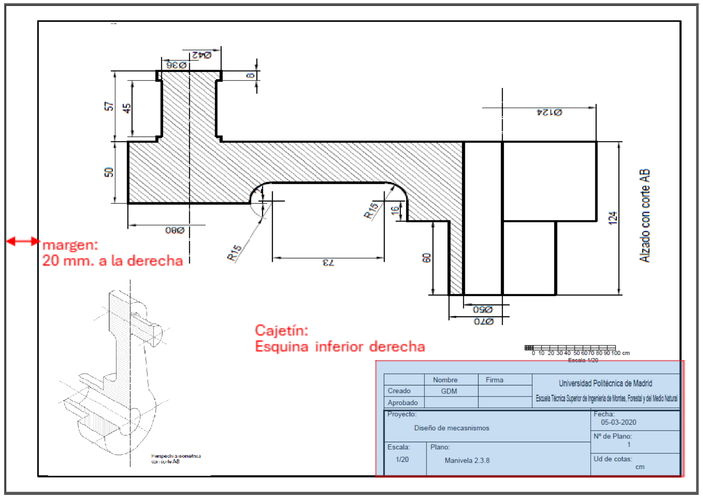
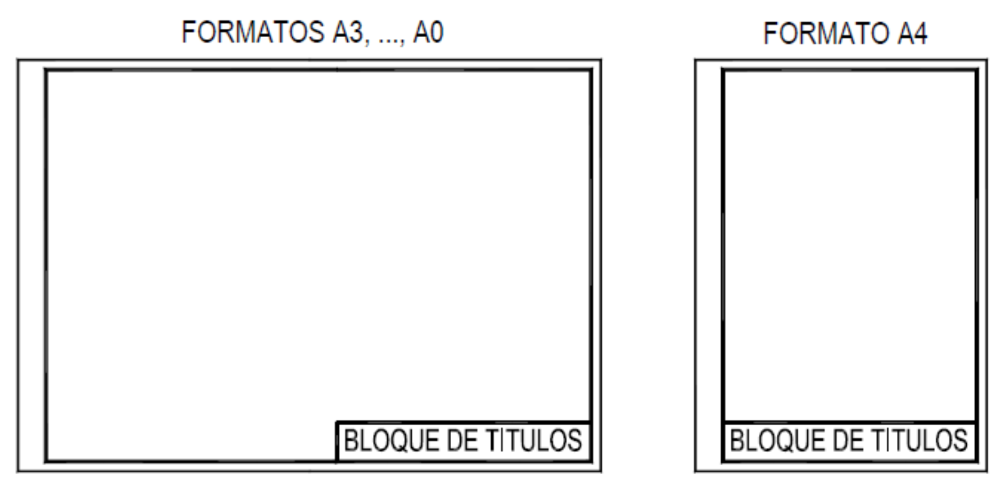
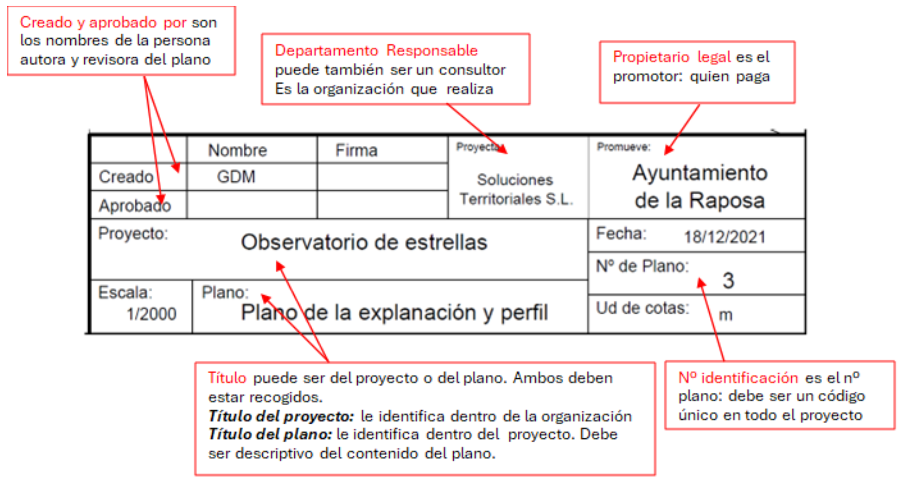
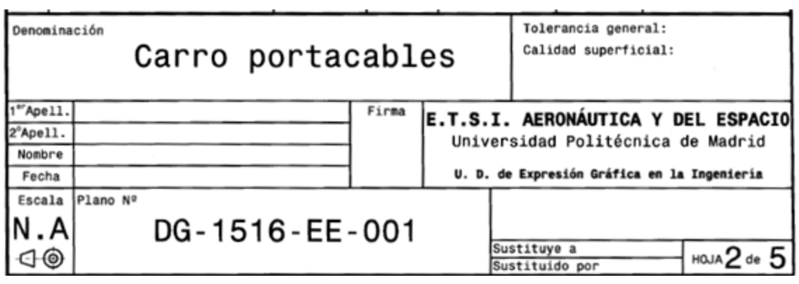
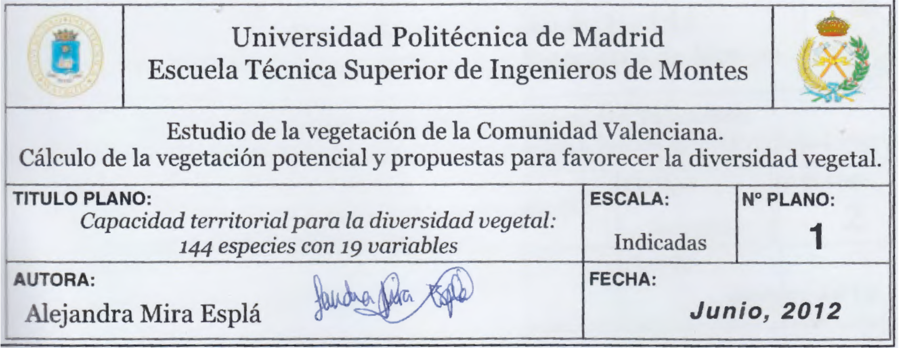
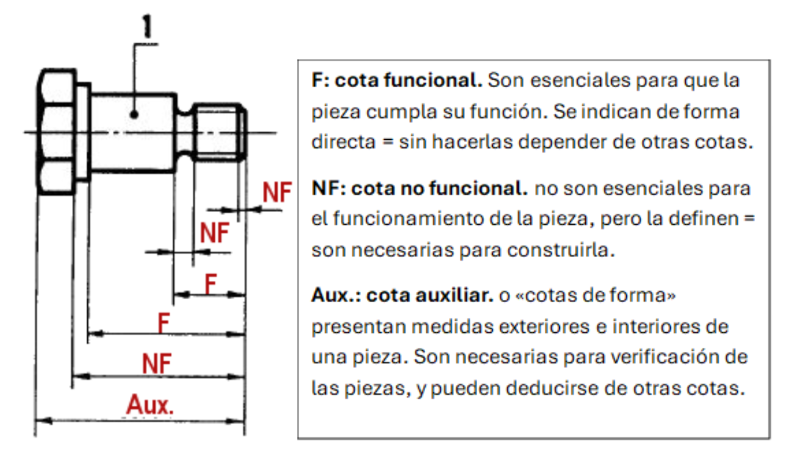
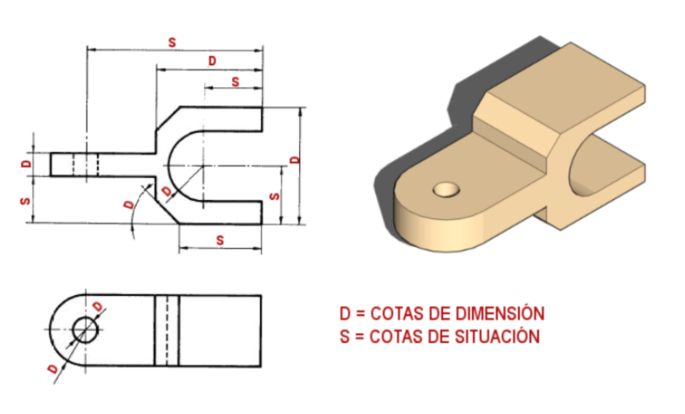

1 Normalización
Normalización: Formatos de papel, rotulación, tipos de línea, escalas y acotación
1.1 Escalas
1.1.1 Contenido
La norma ISO que define las escalas es la ISO 5455:1979. Su contenido es el siguiente.
- Objeto y campo de aplicación
- Definiciones
- Designación
- Inscripción
- Escalas
- Dibujos a gran escala
1.1.2 Apuntes
1.1.2.1 Objeto y campo de aplicación
Esta Norma Internacional especifica las escalas recomendadas, así como su designación para su utilización en los dibujos técnicos en todos los campos de la técnica.
1.1.2.2 Definiciones
Escala: Relación entre la medida lineal de la representación de un elemento de un objeto sobre un dibujo original y la medida lineal real del mismo elemento del objeto real.
Escala a “tamaño natural”: Escala que corresponde a la relación 1:1
Escala de ampliación: Escalas que corresponden a una relación superior a 1:1. Se dice que es mayor a medida que la relación correspondiente aumenta. Por ejemplo en una escala 2:1 la relación es de 2. Es decir, el objeto representado se amplía al doble.
Escalas de reducción: Escalas que corresponden a una relación inferior a 1:1. Se dice que es menor a medida que la relación correspondiente disminuye. Por ejemplo en una escala 1:2 la relación es de 0.5. Es decir, el objeto representado se reduce a la mitad.
1.1.2.3 Designación e inscripción
La designación completa de una escala debe comprender la palabra “ESCALA” (o su equivalente en la lengua utilizada en el dibujo), seguida de la indicación de la relación correspondiente, como se indica a continuación:
- ESCALA 1:1, para el tamaño natural.
- ESCALA x:1, para las escalas de ampliación.
- ESCALA 1:x, para las escalas de reducción.
Nota
La notación de escala 1:1 significa que una unidad de medida en el dibujo equivale a una unidad de medida en el objeto real.
El primer término representará la magnitud de la representación del objeto en el papel. El segundo término representará la magnitud objeto real.
PAPEL:REAL
Nota
Como la escala es una relación adimensional, ambas magnitudes deben expresarse enlas mismas unidades
Si no hay posibilidad de confusión, se puede omitir la palabra “ESCALA”.
Respecto a la inscripción la norma dice “La designación de la escala utilizada en el dibujo debe inscribirse en el cuadro de rotulación del dibujo.
Si hay que utilizar varias escalas en un dibujo, sólo debe inscribirse la escala principal del dibujo en el cuadro de rotulación, inscribiéndose las otras escalas al lado del número de referencia de la parte considerada o al lado de la referencia de una vista (o corte) de detalle.”
1.1.2.4 Escalas normalizadas
| Categoría | Escalas recomendadas | ||
|---|---|---|---|
| Escalas de ampliación | 50:1 | 20:1 | 10:1 |
| 5:1 | 2:1 | ||
| Tamaño natural | 1:1 | ||
| Escalas de reducción | 1:2 | 1:5 | 1:10 |
| 1:20 | 1:50 | 1:100 | |
| 1:200 | 1:500 | 1:1 000 | |
| 1:2 000 | 1:5 000 | 1:10 000 |
1.1.3 Material complementario
Web Deusto generalidades escalaEn esta escueta web se explica (1) definición escala (2) tipos de escala (3) como aplicar e interpretar la escala
1.2 Tipos de linea
1.2.1 Contenido
La norma ISO que define los principios generales de representación. Parte 2: convenciones básicas para lineas es la UNE-en ISO 128-2:2022. Su contenido es el siguiente (en inglés).
- Scope
- Normative references
- Terms and definitions
- Types of lines
- Line dimensions
- Draughting of lines
- Colours
- Designation
- Basic conventions and applications for leader lines and reference lines
1.2.2 Apuntes
Los planos deben contener dibujos claros que eviten la confusión. Las líneas normalizadas ayudan a que las zonas importantes del dibujo estén resaltadas (líneas gruesas) y otras más finas que sirvan para otros datos o referencias
En este poster se resumen los tipos de línea más comunes en los planos y su uso.
1.2.3 Material complementario
Web del Profesor Iñaki Biguri sobre líneas normalizadasWeb corta, completa y con explicaciones claras y ejemplos sobre los usos de las líneas normalizadas
1.3 Formatos de papel
1.3.1 Contenido
La norma ISO que define los formatos de papel es la UNE-EN ISO 216:2008. Su contenido es el siguiente.
- Objeto y campo de aplicación
- Normas para consulta
- Términos y definiciones
- Principios generales
- Designación de los formatos acabados y del sentido máquina
- Formatos acabados
- Tolerancias
1.3.2 Apuntes
1.3.2.1 Denominación correcta de los pliegos de papel
El formato más común y que usamos todos habitualmente es el DIN A4 (201X297mm). En España se le sigue denominando “Folio” que era el anterior formato, cuyas dimensiones son 215×315 mm. De forma semejante, la clásica “cuartilla” equivaldría en los formatos normalizados al A5.

No hay que confundir denominaciones y hay que usar siempre que sea posible los formatos normalizados.
1.3.2.2 Obtención de los diferentes formatos de la serie A
Recordar las dimensiones de la serie A es muy sencillo, ya que para obtener un formato del inmediatamente más pequeño se “duplica su lado corto”.
Por ejemplo, en la imagen se observa como duplicando el lado corto del A4 (que mide 210mm) se obtiene el lado largo del A3.

1.3.2.3 Posiciones de los diferentes formatos para planos.
En general, todos los formatos se utilizan en posición apaisada, es decir, si hubiese superpuesto un sistema de ejes cartesianos, la dimensión larga del formato estaría situada siempre paralela al eje x.

El formato A4 es la excepción. En este caso, NUNCA se usa apaisado, SIEMPRE se usa en posición vertical.
Esta regla no impide el máximo aprovechamiento del pliego en los casos que sea necesario, es decir, se puede girar el dibujo para que quepa dentro del formato, pero el cajetín siempre quedará en la esquina inferior derecha del lado largo y por tanto la posición del plano será apaisada, tal y como se muestra en la siguiente figura.

1.3.3 Material complementario
1.4 Carátula, sello, bloque de títulos o cajetín
1.4.1 Contenido
La norma ISO que define los campos de datos en bloques de títulos y en cabeceras de documentos es la UNE-EN ISO 7200:2004. Su contenido es el siguiente.
- Objeto y campo de aplicación
- Normas para consulta
- Términos y definiciones
- Generalidades
- Campos de datos en el bloque de títulos
- Disposiciones del bloque de títulos
1.4.2 Apuntes
1.4.2.1 Posición del cajetín en el plano
En todos los formatos, el cajetín se sitúa alineado con los márgenes en la esquina inferior derecha, tal como se muestra en la siguiente figura. En el A4, y debido precisamente a las dimensiones de su anchura el cajetín ocupa todo el espacio entre los dos márgenes.

1.4.2.2 Dimensión del cajetín
En altura es libre, en anchura, viene condicionada por lo siguiente:
- La información contenida en el cajetín debe estar siempre a la vista, es decir, este no se puede doblar
- Todos los planos de la serie se archivan doblados en formato A4
- Los márgenes normalizados del A4 son 20 mm+ 10mm, por tanto, la anchura del cajetín debe ser de 180 mm. (210 - 30)
1.4.2.3 Ejemplo de cajetín
No es imprescindible recordar todos los campos incluidos en la norma, ésta siempre se puede consultar. Sin embargo, es muy importante comprender bien los conceptos cuyo contenido se refleja en las casillas del cajetín y cómo se aplican según el caso concreto de un proyecto dado.
El cajetín de un plano es su documento de identidad.
El cajetín es único para cada proyecto y debe ser idéntico en todos los planos del mismo proyecto. No todos los campos son imprescindibles en todos los proyectos. En la siguiente figura se aclaran algunos de los campos más importantes.
Caso: se trata de un proyecto para construir una explanación del terreno en la que situar un observatorio de estrellas. El Ayuntamiento de la Raposa quiere realizar el proyecto y encarga la redacción del mismo a la empresa consultora Soluciones Territoriales S.L. En el plano se han dibujado los movimientos de tierra necesarios para construir la explanación y un perfil del terreno para visualizarlo.

La norma no obliga a que aparezcan en el cajetín la
Por eso, para
1.4.2.4 Otros ejemplos de cajetín


1.4.3 Material complementario
1.5 Rotulación
1.5.1 Contenido
La norma ISO que define los aspectos generales de la rotulación es la ISO 3098-1. Su contenido es el siguiente (en Inglés).
- Scope
- Normative references
- Terms and definitions
- General requirements
- Dimensions
- Designation
1.5.2 Apuntes
Lo más importante de la rotulación es que produzca letras legibles y claras que ayuden a la correcta interpretación del plano.
Es muy importante que el tamaño de la letra no sea demasiado pequeño (inferior a 2,3 mm. no se lee) ni demasiado grande (superior a 5 mm. ocupa mucho). En los planos raramente se usan tamaños superiores a 7 mm.
Parece demostrado que los tipos de letra con “ serif” (con rabillos) ayudan a la lectura rápida de textos largos, ya que el lector solo se fija en la parte superior de la línea, esto se debe a los principios de la Gestalt que permiten al cerebro “completar” la forma. Precisamente este aspecto se ha usado por investigadores del Australia’s Royal Melbourne Institute of Technology para dificultar la lectura y hacer que el lector recuerde más información del texto leído.
Sin embargo, en el caso de los planos interesan letras sencillas, sin adornos para aumentar la claridad y legibilidad, en general “sans serif”.
Por otra parte, si las letras están un poco separadas aumenta la legibilidad, pero hay que llegar a un compromiso, ya que esos textos “ocupan mucho espacio” para una altura dada, y en ocasiones eso no interesa en un plano, como p.e. en los textos de acotación, que es mejor que sean estilizados.
1.5.3 Material complementario
Resumen rotulación IES Gómez PereiraSe trata de un pdf de una sola página con los contenidos más relevantes de la rotulación.
Con la tipografía ‘Sans Forgetica’ es más fácil que recuerdes lo que leesArtículo divulgativo que ilustra aspectos de la claridad y legibilidad de una tipografía y describe un experimento científico asociado con ello.
Análisis de diseño: Las 12 fuentes más fáciles de leerWeb corta que analiza porque unas tipografías son más claras o legibles que otras.
1.6 Acotación
1.6.1 Contenido
La norma ISO que define los principios generales de la acotación es es la ISO 1039:1994. Su contenido es el siguiente (Revisar. Pone que está anulada por una del 2019 pero no la encuentro).
- Objeto y campo de aplicación
- Normas para consulta
- Principios generales
- Método de acotación
- Disposiciones e inscripción de las cotas
- Indicaciones especiales
- Indicación de niveles
- Correspondencia con otras normas
1.6.2 Apuntes
Toda figura, objeto o pieza, queda definida por aquellos elementos que definen su funcionamiento o que, simplemente, determinan su forma geométrica.
Las cotas se pueden clasificar en función de su importancia: (1) Funcionales (2) No funcionales y (3) Auxiliares

Otra clasificación es en función de su cometido en el plano: (1) Cotas de dimensión y (2) cotas de situación o posición.

Las cotas de situación (S) determinan la posición de los elementos de la pieza, las cotas de dimensión (D) definen el tamaño de cada parte de la pieza
Comprender estos tipos de cotas y cómo se aplican ayuda a definir adecuadamente los objetos con la acotación.
1.6.3 Material complementario
Video de referencia. Normas de acotación básicas (5 minutos) ★★★
- 0:10 Normas generales de acotación
- 0:25 Elementos de acotación
- 1:00 Acotación de arístas
- 3:30 Acotación de diámetros
- 4:25 Acotación de radios
Vídeo “Arturo Geometría” Acotación (20’17’’) ★★★
Vídeo completo con explicaciones verbales sobre las normas básicas de acotación
Web de youtube con 8 vídeos sobre diversos aspectos y casos de acotaciónTratan de casos algo más complejos, pero muy útiles para ampliar conocimientos sobre acotación.
Web sobre acotación del profesor Iñaki Biguri (recomendada) ★★★Se trata de una web completa y bien ordenada para estudiar diversos aspectos de la acotación normalizada.
Web sobre acotación (nivel 1º Bachillerato) Junta AndalucíaSe trata de una web para el nivel básico de dibujo de 1º de Bachillerato.